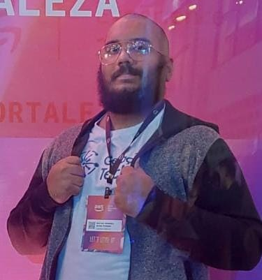

Aôba! Bão?
Já que tamo nessa parte fora do conteúdo principal, aqui vão algumas curiosidades sobre mim:
- Sou canhoto;
- Tenho uma guitarra própria para canhotos;
- Já ganhei uma competição de karate quando era criança, mas perdi a medalha;
- Já fui Top 3 em dano causado e Top 8 em velocidade de conclusão dos tanks do servidor Norte-Americano (Primal) no Final Fantasy XIV, na expansão Endwalker;
*Infelizmente essa classificação só é validada pela comunidade, não tem suporte oficial da SQEX* - Também já fui Top 25 de Ryan em PvP no saudoso Grand Chase;
- Amo jogos de luta, inclusive tenho um controle arcade pra jogar Street Fighter 6 e Tekken 8;
- Meu sonho é ser desenvolvedor de jogos e pretendo fazer um jogo por conta própria e upar na Steam. Já tenho lançado meu primeiro jogo oficial, é o Cosmic Wings;
- Tenho um Canal na Twitch, mas como o Pc não aguenta mais fazer lives, tá em hiato por um tempo;
- E esse aqui sou eu: 
Obrigado por visitar!